Who is DrHong?
Aug 2, 2019
Euy Shick Hong, (born 1980, Republic of Korea) is a Computer musician, a Software engineer, Jazz Saxophonist. Now he works in IT company as a software engineer(2016 ~) and ICMT(Institute for Computer Music and technology) playing saxophone with musical works. And he is planning to develop a web application with Javascript, Python, Node.js, etc and web technology.
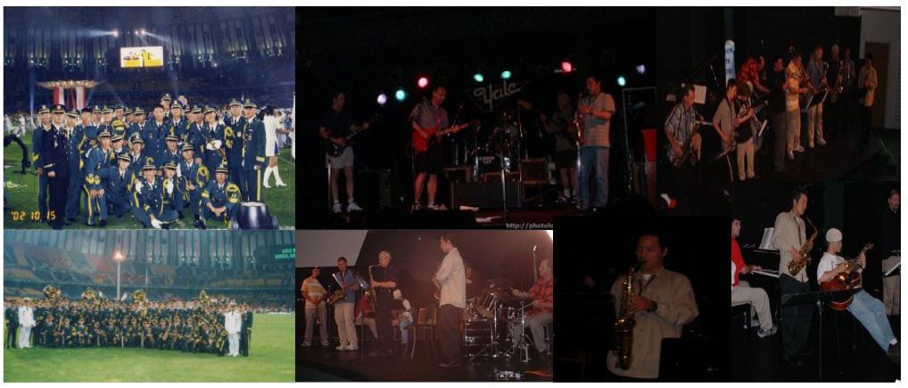 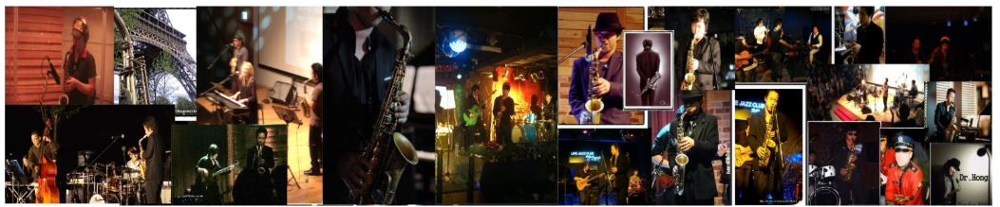 In 2002, He performed in ROKA BAND with guitar, saxophone and participated 2002 Korea-Japan World cup and 2002 Busan Asian Game. In 2004, He studied Jazz Saxophone at Delta Community Music School in Canada and led Hong euy shick Jazz quartet that had lots of Jazz works such as club, concert, Jazz festival, album.
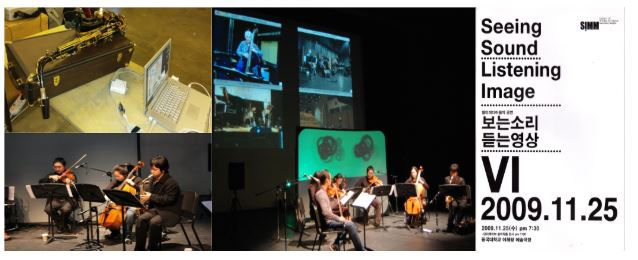 In 2009, He attended MARTE [4] at Dongguk University and studied computer music, Interactive performance, sound synthesis with a saxophone. Also, he joined resonation [5][video] and won a silver prize in The 10th, Computer music and sound competition 2009. Furthermore, he released first album "Dr.Hong" that is jazz, blues Music [album]. In 2010, He released album "Do you like apple?" [album] and played a"spirit" that is interactive perform with Max/MSP, Quartz Composer [8][video]. 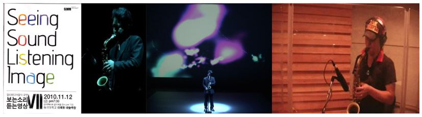
In 2011, He gets M.M(Master of Music in Computer Music)[8] in MARTE and performed "Endure".
Also, he released 3 albums that "butter fry", "blue garlic", "Interaktive" [album].
He interviewed aliceon media art channel [article].

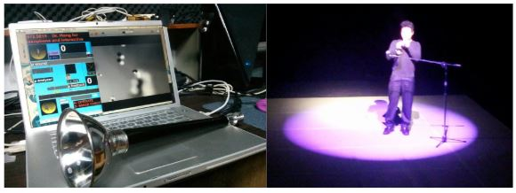 In 2012, He played "Arirang" [video] that is interactive performance by Tae Pyoung So as traditional instrument in Korea and was invitied radio show and played saxophone and interviewed. 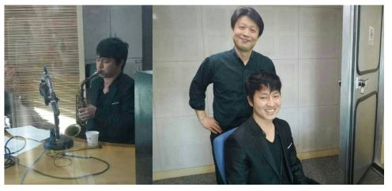
In 2014, He released "Arirang" [album] and papers that "A study on timbre analysis of saxophone sound by different mouthpieces" [18].
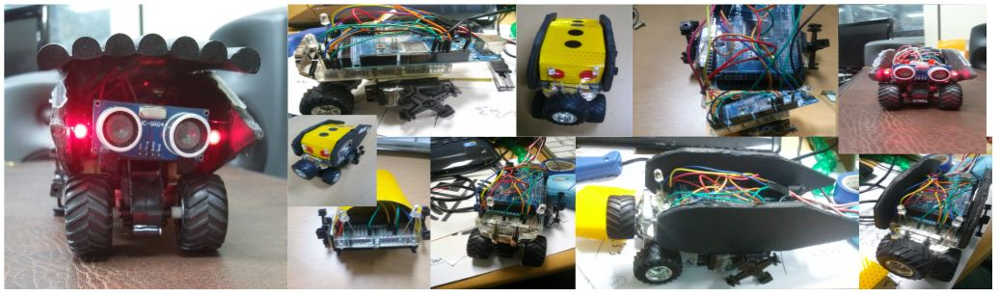 In 2015, He released "Arirang second story", "Forest of owl" [album] and book of Saxophone Method of Miracle [20]. Also, he released "A study on timbre analysis of saxophone sound by different reeds"[22]. He performs "arirang second story" with Dr.Saxohone [video]. Also, he studied a physical computing and made "RC CAR". 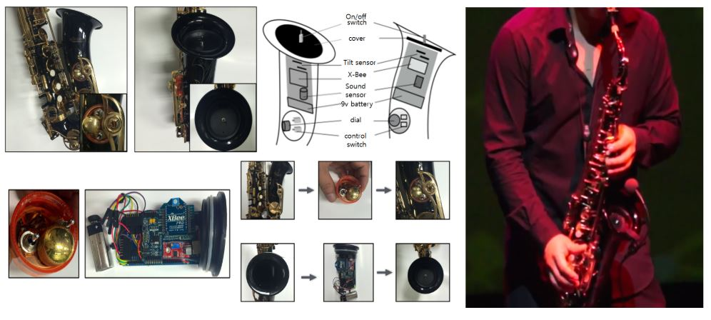
In 2016, He published "Physical Computing with Arduino" [26] also he works "Dr.Saxophone : Hybrid saxophone interface" [28] and "A study on sound analysis and saxophone technique in Claudio Gabriele’s [ARRIFLEX 35]"[30]. 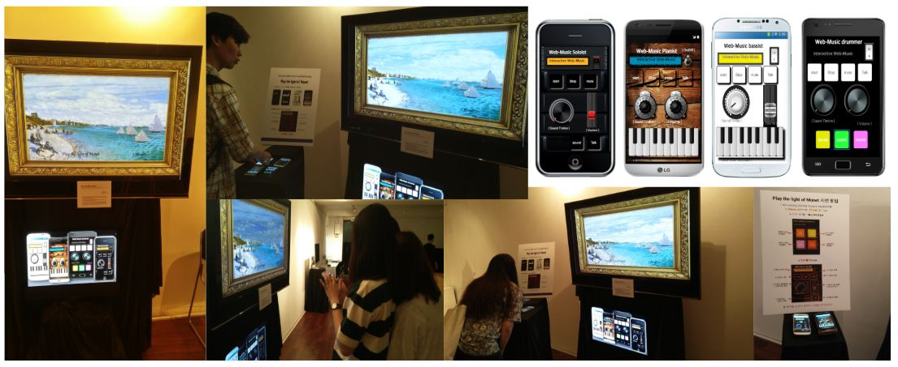 He developed "play the light of monet" and exhibited it is Interactive Web Audio/Visual Networking System.[32][video] . Also, he performs "White Night"[video] with Dr.Saxohone II and DrSaxoman [34] that web audio application. Since now, he works IT COMPANY WEB TECHNOLOGY such as Javascript, Node.js, React.js 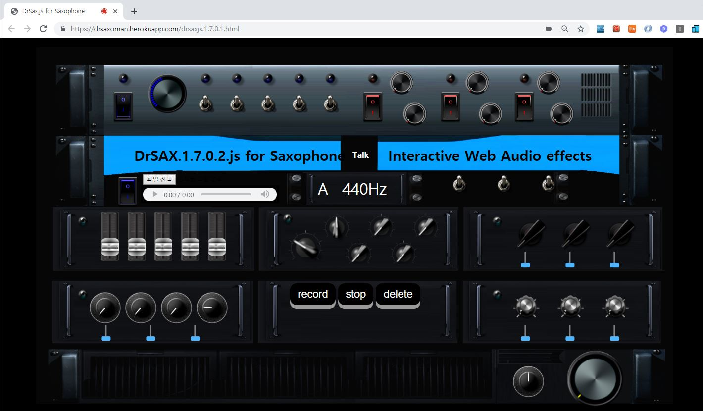
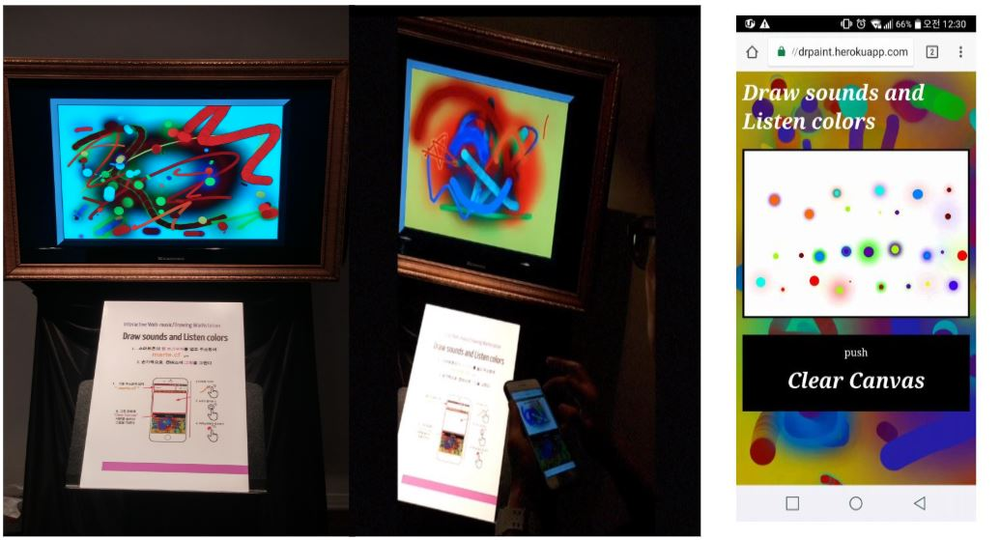 In 2017, He studied "composition 2017"[36] [video] that interactive media installation works. Also, he released "Play the light of Monet : Interactive web audio/visual networking system"[40], "Drsax.js: a javascript based unified web audio library and framework"[42], "Telesaxophone: hybrid Saxophone interface" [44], "Webxophone: web audio wind instrument"[46]. Also, he released "Interactive Web Audio Networking System and Method with DrSax.js" [47]. 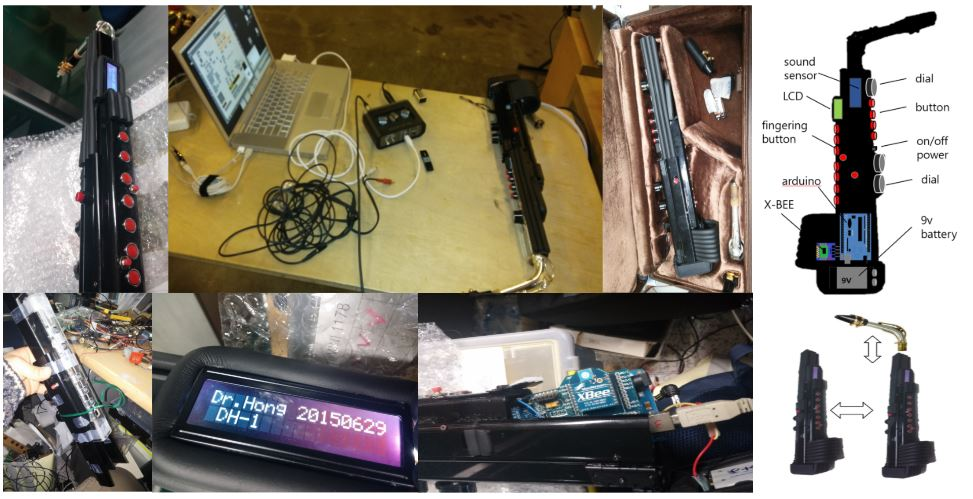 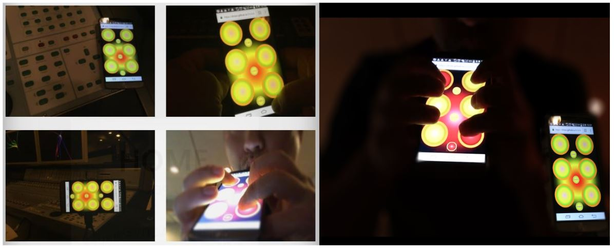
In 2018, He released "A Study of Hybrid Saxophone Interface for Interactive Networking System" [48]. In 2019, He completed doctoral dissertation "A study of Interactive Web Application through Web-based Audio Library Development" [50] with created web applications such as DrSax.js, DrEditor, DrWebSax, Composition 2017. 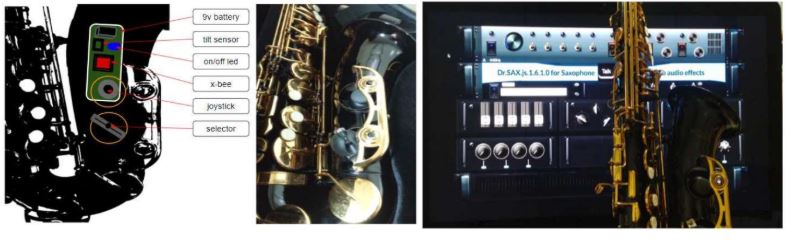 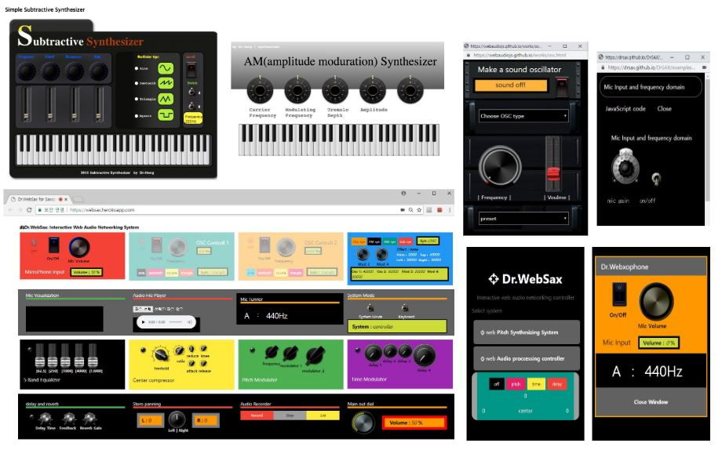 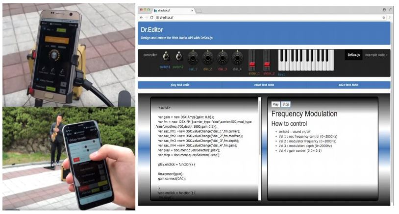 He works in ICMT(Institute for Computer Music and Technology) and IT company as a software engineer playing saxophone with musical works. and He is planning to develop a web application with Javascript, Python, Node.js, etc and web technology.
Education
-
Dongguk University, D.M.A in Computer Music 2019
MARTE(The Laboratory of Musical Arts and Technology)
-
Yonsei University, Master in Computer Engineering
Graduate School of Engineering, Computer Engineering
-
Dongguk University, M.M in Computer Music 2011
MARTE(The Laboratory of Musical Arts and Technology)
-
Deltal Community Music School 2004
Jazz Saxophone
Papers
-
"A study of Interactive Web Application through Web-based Audio Library Development"
Doctoral Dissertation, 2019
-
"Audio-visual performance by real-time timbre analyze of saxophone"
Master Thesis, 2011
-
"DrWebusic : Real-time Interactive Audio System on the Web"
Euy shick Hong, Journal of Digital Contents Society 2019 (KCI)
-
"A Study of Hybrid Saxophone Interface for Interactive Networking System"
Euy shick Hong, Jun Kim, Asia-pacific Journal of Multimedia services convergent with Art,and Humanities Sociology 2018 (KCI)
-
"Interactive Web Audio Networking System and Method with DrSax.js"
Euy shick Hong, Jun Kim, the 3rd International Conference on Communication and Information 2017 Tokyo uni. (SCOPUS)
-
"Play the light of Monet : Interactive web audio/visual networking system"
Euy shick Hong, Jun Kim, In Proceedings of Engineering and Art Society of Korea Conference, Korea 2017
-
"Drsax.js: a javascript based unified web audio library and framework"
Euy shick Hong, Jun Kim, International Conference on Algorithms, Computing and Systems 2017 (SCOPUS)
-
"Telesaxophone: hybrid Saxophone interface"
Euy shick Hong, Jun Kim, International Conference on Algorithms, Computing and Systems 2017 (SCOPUS)
-
"Webxophone: web audio wind instrument"
Euy shick Hong, Jun Kim, International Conference on Algorithms, Computing and Systems 2017 (SCOPUS)
-
"Dr.Saxophone : Hybrid saxophone interface"
Euy shick Hong, Baron Kim, Kiyeor Han, The 3rd International Conference on Systems and Informatics 2016(SCOPUS)
-
"A study on sound analysis and saxophone technique in Claudio Gabriele’s [ARRIFLEX 35]"
Euy shick Hong, Jun Kim, In Proceedings of Engineering and Art Society of Korea Conference, Korea 2016
-
"A study on timbre analysis of saxophone sound by different reeds"
Euy shick Hong, Jun Kim, In Proceedings of Engineering and Art Society of Korea Conference, Korea 2015
-
"A study on timbre analysis of saxophone sound by different mouthpieces"
Euy shick Hong, Jun Kim, In Proceedings of Engineering and Art Society of Korea Conference, Korea 2014
Published Books
-
Physical Computing with Arduino 2016
Euyshick Hong, ISBN:312-4324-431-234 , Realise media.
-
Saxophone Method of Miracle 2015
Euyshick Hong, ISBN:312-4324-431-234 , Realise media
Album
- "Dr.Hong" 2009
- "Do you like apple?" 2010
- "butter fry" 2011
- "blue garlic" 2011
- "Interaktive" 2011
- "Arirang" 2014
- "Arirang second story" 2015
- "Forest of owl" 2015
Awards
-
The 10th, Computer music and sound competition 2009
silver prize, Ulsan university.
Interactive performance
- Resonation 2009
- "Spirit" 2010
- "Endure" 2011
- "Arirang" 2012
- "Arirang second story" 2015
- "White Night" 2016
- ... more
Media Installation
- "play the light of monet" 2016
- "Composition 2017" 2017
Concert
- 2002 Korea-Japan World Cup 2002
- 2002 Busan Asian Game 2002
- Korea pops Orchestra 2007
- Intenational Jazz Jarasum Festival 2009, 2010
- Gugak Broadcasting-Arirang 2014
- Various Jazz Club..
- ... more
(Euy shick Hong, Jun Kim, In Proceedings of Engineering and Art Society of Korea Conference, Korea 2014) [20] Saxophone Method of Miracle(ISBN:312-4324-431-234 ,Realise media, 2015) [22] "A study on timbre analysis of saxophone sound by different reeds"(Euy shick Hong, Jun Kim, In Proceedings of Engineering and Art Society of Korea Conference, Korea 2015) [26] "Physical Computing with Arduino"(ISBN:312-4324-431-234 , Realise media, 2016) [28] "Dr.Saxophone : Hybrid saxophone interface"
(Euy shick Hong, Baron Kim, Kiyeor Han, The 3rd International Conference on Systems and Informatics 2016(SCOPUS)) [30] "A study on sound analysis and saxophone technique in Claudio Gabriele’s [ARRIFLEX 35]"
(Euy shick Hong, Jun Kim, In Proceedings of Engineering and Art Society of Korea Conference, Korea 2016) [32] "play the light of monet" : Intereactive web audio/visual networking system
Javascript, Web Audio API, Node.js [34] DrSaxoman : Intereactive web audio application
Javascript, Web Audio API, Node.js [36] "composition 2017" : Intereactive Media installation
Javascript, DrSax.js, Node.js [40] "Play the light of Monet : Interactive web audio/visual networking system"
(Euy shick Hong, Jun Kim, In Proceedings of Engineering and Art Society of Korea Conference, Korea 2017) [42] "Drsax.js: a javascript based unified web audio library and framework"
(Euy shick Hong, Jun Kim, International Conference on Algorithms, Computing and Systems 2017 (SCOPUS)) [44] "Telesaxophone: hybrid Saxophone interface"
(Euy shick Hong, Jun Kim, International Conference on Algorithms, Computing and Systems 2017 (SCOPUS)) [46] "Webxophone: web audio wind instrument"
(Euy shick Hong, Jun Kim, International Conference on Algorithms, Computing and Systems 2017 (SCOPUS)) [47] "Interactive Web Audio Networking System and Method with DrSax.js"
(Euy shick Hong, Jun Kim, the 3rd International Conference on Communication and Information 2017 Tokyo uni. (SCOPUS)) [48] "A Study of Hybrid Saxophone Interface for Interactive Networking System"
(Euy shick Hong, Jun Kim, Asia-pacific Journal of Multimedia services convergent with Art,and Humanities Sociology 2018 (KCI)). [50] "A study of Interactive Web Application through Web-based Audio Library Development"(Doctoral Dissertation, 2019) ) Drsx,js, DrEditor, DrWebSAX, composition 2017